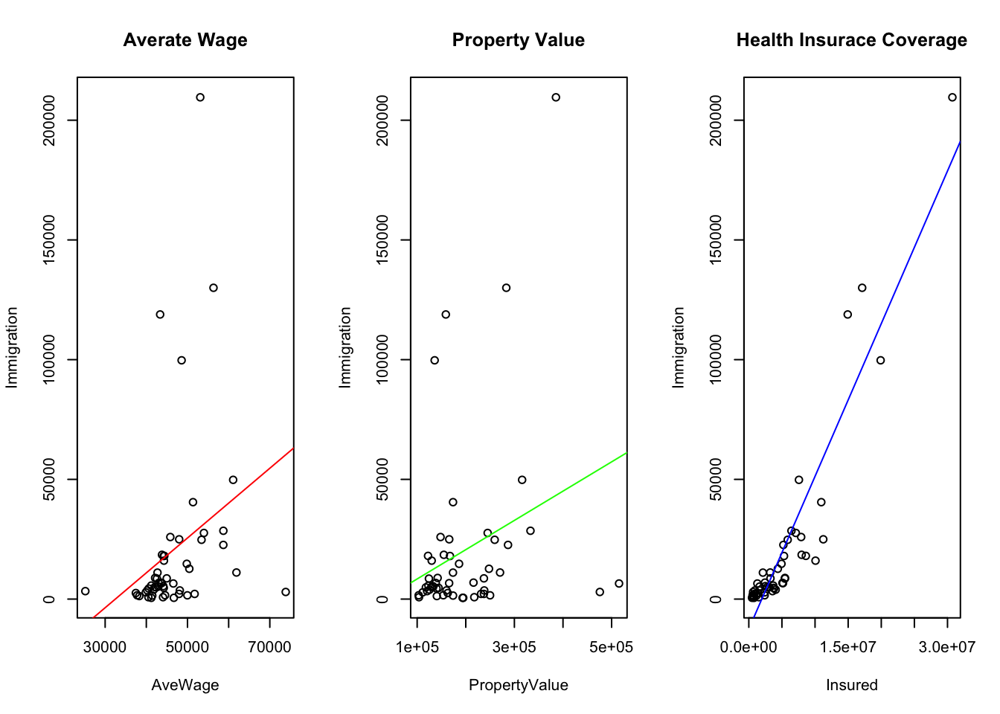

Project
Introduction
Motivations
My project will be talking about the immigration preferences of different states in the United States. I was initially motivated by some of my friends from China, my home country, who were considering to permanently stay in the US. As well known, the United States is an immigration country of freedom, and it welcomes all the dream chasers and whoever wants to pursue any success. I am interested in studying which kinds of factors will influence immigrants’ preferences when choosing a certain state to live. Are there any particular factors that really affect their choices? Which aspects may closely correlate with the openness of the state?
Literature Review
The United States has long been cognized as the “paradise” of immigrants, and recent people rely on more factors other than the economic condition of an area when they are choosing a residential place. According to an article by Business Insider, they have concerns about opportunities for earnings, health risks, homeownership, and openness for non-English speakers. Also, the Better Life Index, accounted in May 2011 by the OECD shows the index of housing, health, income, and jobs, as well as communities to better measure how people lead a happier life. However, critiques have also been raised by scholars on how much accuracy can OECD index actually illustrate, which further leads to my research question of how well can these parameter set work with immigrants? In a background setting within the United States, what indicators are potentially adjusting people’s decisions most?
Analysis
Data
I use the data recorded in 2015 from DATAUSA (https://datausa.io/), an open-source data website for public. I found the average wage, median property value (living cost), healthcare insured rate/number (healthcare), and food danger (living quality) to be independent variables for Immigration number, the dependent variables.
Here is the summary of the dataset I am using in this analysis.
summary(data)## State id AveWage PropertyValue
## Alabama : 1 04000US01: 1 Min. :25186 Min. :103100
## Alaska : 1 04000US02: 1 1st Qu.:42119 1st Qu.:135300
## Arizona : 1 04000US04: 1 Median :44226 Median :165900
## Arkansas : 1 04000US05: 1 Mean :46321 Mean :196108
## California: 1 04000US06: 1 3rd Qu.:49865 3rd Qu.:237475
## Colorado : 1 04000US08: 1 Max. :73861 Max. :515300
## (Other) :46 (Other) :46
## Insured FoodDanger Immigration Population
## Min. : 481134 high:24 Min. : 519 Min. : 579679
## 1st Qu.: 1470015 low :28 1st Qu.: 2936 1st Qu.: 1792702
## Median : 3638425 Median : 6584 Median : 4168293
## Mean : 5123120 Mean : 20163 Mean : 6155733
## 3rd Qu.: 6010183 3rd Qu.: 18160 3rd Qu.: 6775556
## Max. :30737171 Max. :209568 Max. :38421464
##
## Prop_Imm
## Min. :0.0004245
## 1st Qu.:0.0012667
## Median :0.0019162
## Mean :0.0023771
## 3rd Qu.:0.0031948
## Max. :0.0066085
## To make it clear, my dataset includes 52 observables (50 states plus District of Columbia and Puerto Rico) in 12 attributes. The relevant variables are: average wage (AveWage), property value(PropertyValue), health insurance coverage(Insured), and food Risk (FoodDanger). The dependent variable is coded as Immigration, which refers to the population of immigrants.
*Note: all the variables are numeric expect for FoodDanger. The original data is in a percentage form, which means the percentage of unsafe food. Due to the small variance of original data, I convert this variable into a factor variable. Those states with a percentage over 15 (the mean), they are labeled as “high”, otherwise, “low”.
Methods and Results
For methods chosen to analyze the dataset, basically, regressions are used in my project, including both simple linear regression and multiple regressions.
My general null hypothesis is \(\mu_0\): average wage, property value, health insurance coverage and food risk all have influences on preferences of immigrants. In particular:
\(\mu_a\): Health insurance is relatively the most influential factor.
\(\mu_b\): Income level is more important for immigrants comparing with property value.
\(\mu_c\): People are more likely to stay in a state with lower food risks.
First, I run a multiple regression containing all the variables and linear regressions in terms of each variable.
##
## Call:
## lm(formula = Immigration ~ AveWage + PropertyValue + Insured +
## factor(FoodDanger))
##
## Residuals:
## Min 1Q Median 3Q Max
## -32342 -7067 1306 6742 39689
##
## Coefficients:
## Estimate Std. Error t value Pr(>|t|)
## (Intercept) -1.073e+04 1.258e+04 -0.853 0.39805
## AveWage -4.634e-01 3.576e-01 -1.296 0.20128
## PropertyValue 9.101e-02 2.980e-02 3.054 0.00371 **
## Insured 6.398e-03 3.506e-04 18.249 < 2e-16 ***
## factor(FoodDanger)low 3.211e+03 4.193e+03 0.766 0.44765
## ---
## Signif. codes: 0 '***' 0.001 '**' 0.01 '*' 0.05 '.' 0.1 ' ' 1
##
## Residual standard error: 12670 on 47 degrees of freedom
## Multiple R-squared: 0.8986, Adjusted R-squared: 0.8899
## F-statistic: 104.1 on 4 and 47 DF, p-value: < 2.2e-16
From the results shown, we have key findings that:
it is plausible to say health insurance is more influential than the other factors as it has a significant correlation with immigration. The slope is 0.0064, which states a weak relationship. \(\mu_a\) is true.
Average wage shows a negative relationship with immigration, which is not significant, while the property value has a weak, positive relationship with immigration. The slope is about 0.091. \(\mu_b\) is rejected.
Food risk may not be that important for immigrants when choosing the state. \(\mu_c\) is rejected.
Separately, the health insurance coverage manifests the most salient relationship with immigration. They are positively correlated.
Next, the other three variables are measured with “food danger” factor variable. Plots are as following:


The plots are not sufficient to provide evidence for a relationship between food danger and immigration. It is even observed that in high-risk areas, average wage and property value show a stronger positive relationship with immigration. A possible reason behind is, a bigger population could give rise to more food issues.
Conclusion
From the data and results we get, we can conclude that: all the four variables involved here (average wage, Property Value, Health insurance coverage, and food danger) are not good predictors of immigrants’ preference when choosing the state for residence. Among these, however, immigrants care most about the insurance level, which indicates the power of living support from the government. The wage and property values are not salient probability because the immigrants have relatives or self-communities in a certain area that can provide pecuniary support. Besides, the food problem may not be visible enough for immigrants to consider. That is, all the states share a similar level of food insecurity (around 15) with a small variance (around 0.2).
## [1] 0.2533937As shown, the variance is so close to 0 that it could not make food issue relevant to immigration population.
Hence, high living cost might not be an obstacle for immigrants to come, while poor insurance support might be.